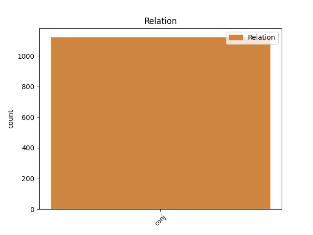
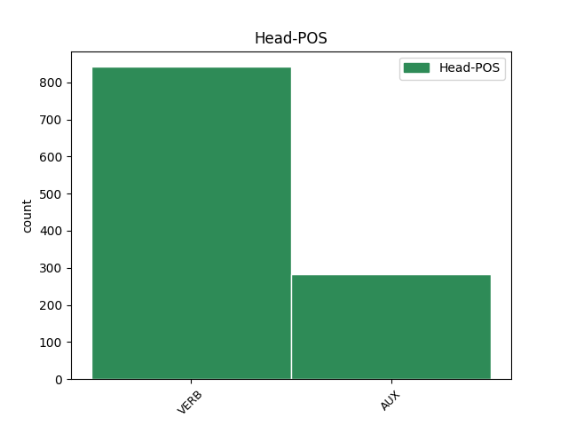
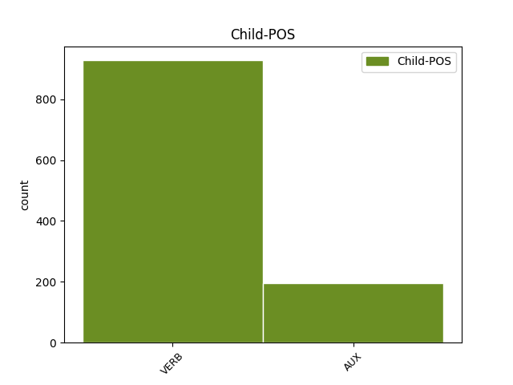

Distribution of features within this leaf



Agreement Rules sorted by frequency.
- When the dependent token is the conjunct(conj) of the head token, and the head token is VERB and the dependent token is VERB.
1 Avisado _ _ _ _ 0 _ _ _
2 de _ _ _ _ 0 _ _ _
3 o _ _ _ _ 0 _ _ _
4 alerta _ _ _ _ 0 _ _ _
5 de _ _ _ _ 0 _ _ _
6 o _ _ _ _ 0 _ _ _
7 governador _ _ _ _ 0 _ _ _
8 , _ _ _ _ 0 _ _ _
9 Itamar _ _ _ _ 0 _ _ _
10 desdenhou desdenhar VERB _ Mood=Ind|Number=Sing|Person=3|Tense=Past|VerbForm=Fin 0 _ _ _
11 os _ _ _ _ 0 _ _ _
12 riscos _ _ _ _ 0 _ _ _
13 e _ _ _ _ 0 _ _ _
14 manteve manter VERB _ Mood=Ind|Number=Sing|Person=3|Tense=Past|VerbForm=Fin 10 conj _ _
15 a _ _ _ _ 0 _ _ _
16 viagem _ _ _ _ 0 _ _ _
17 . _ _ _ _ 0 _ _ _
1 Mas _ _ _ _ 0 _ _ _
2 a _ _ _ _ 0 _ _ _
3 roubalheira _ _ _ _ 0 _ _ _
4 é _ _ _ _ 0 _ _ _
5 apenas _ _ _ _ 0 _ _ _
6 a _ _ _ _ 0 _ _ _
7 ponta _ _ _ _ 0 _ _ _
8 de _ _ _ _ 0 _ _ _
9 o _ _ _ _ 0 _ _ _
10 « _ _ _ _ 0 _ _ _
11 lamaçal _ _ _ _ 0 _ _ _
12 » _ _ _ _ 0 _ _ _
13 : _ _ _ _ 0 _ _ _
14 o _ _ _ _ 0 _ _ _
15 problema _ _ _ _ 0 _ _ _
16 essencial _ _ _ _ 0 _ _ _
17 , _ _ _ _ 0 _ _ _
18 a _ _ _ _ 0 _ _ _
19 grande _ _ _ _ 0 _ _ _
20 delinquência _ _ _ _ 0 _ _ _
21 , _ _ _ _ 0 _ _ _
22 é ser AUX _ Mood=Ind|Number=Sing|Person=3|Tense=Pres|VerbForm=Fin 0 _ _ _
23 a _ _ _ _ 0 _ _ _
24 baixa _ _ _ _ 0 _ _ _
25 taxa _ _ _ _ 0 _ _ _
26 de _ _ _ _ 0 _ _ _
27 seriedade _ _ _ _ 0 _ _ _
28 e _ _ _ _ 0 _ _ _
29 compromisso _ _ _ _ 0 _ _ _
30 de _ _ _ _ 0 _ _ _
31 os _ _ _ _ 0 _ _ _
32 homens _ _ _ _ 0 _ _ _
33 públicos _ _ _ _ 0 _ _ _
34 , _ _ _ _ 0 _ _ _
35 responsável _ _ _ _ 0 _ _ _
36 por _ _ _ _ 0 _ _ _
37 estarmos _ _ _ _ 0 _ _ _
38 atolados _ _ _ _ 0 _ _ _
39 em _ _ _ _ 0 _ _ _
40 níveis _ _ _ _ 0 _ _ _
41 jamais _ _ _ _ 0 _ _ _
42 vistos _ _ _ _ 0 _ _ _
43 de _ _ _ _ 0 _ _ _
44 miséria _ _ _ _ 0 _ _ _
45 e _ _ _ _ 0 _ _ _
46 violência _ _ _ _ 0 _ _ _
47 e _ _ _ _ 0 _ _ _
48 , _ _ _ _ 0 _ _ _
49 como _ _ _ _ 0 _ _ _
50 diz _ _ _ _ 0 _ _ _
51 o _ _ _ _ 0 _ _ _
52 salmo _ _ _ _ 0 _ _ _
53 , _ _ _ _ 0 _ _ _
54 é ser VERB _ Mood=Ind|Number=Sing|Person=3|Tense=Pres|VerbForm=Fin 22 conj _ _
55 aí _ _ _ _ 0 _ _ _
56 que _ _ _ _ 0 _ _ _
57 « _ _ _ _ 0 _ _ _
58 não _ _ _ _ 0 _ _ _
59 se _ _ _ _ 0 _ _ _
60 pode _ _ _ _ 0 _ _ _
61 estar _ _ _ _ 0 _ _ _
62 em _ _ _ _ 0 _ _ _
63 pé _ _ _ _ 0 _ _ _
64 » _ _ _ _ 0 _ _ _
65 . _ _ _ _ 0 _ _ _
1 As _ _ _ _ 0 _ _ _
2 novas _ _ _ _ 0 _ _ _
3 impressoras _ _ _ _ 0 _ _ _
4 a _ _ _ _ 0 _ _ _
5 laser _ _ _ _ 0 _ _ _
6 de _ _ _ _ 0 _ _ _
7 a _ _ _ _ 0 _ _ _
8 HP _ _ _ _ 0 _ _ _
9 vêm vir VERB _ Mood=Ind|Number=Plur|Person=3|Tense=Pres|VerbForm=Fin 0 _ _ _
10 com _ _ _ _ 0 _ _ _
11 um _ _ _ _ 0 _ _ _
12 novo _ _ _ _ 0 _ _ _
13 padrão _ _ _ _ 0 _ _ _
14 de _ _ _ _ 0 _ _ _
15 velocidade _ _ _ _ 0 _ _ _
16 12 _ _ _ _ 0 _ _ _
17 páginas _ _ _ _ 0 _ _ _
18 por _ _ _ _ 0 _ _ _
19 minuto _ _ _ _ 0 _ _ _
20 ( _ _ _ _ 0 _ _ _
21 ppm _ _ _ _ 0 _ _ _
22 ) _ _ _ _ 0 _ _ _
23 e _ _ _ _ 0 _ _ _
24 são ser AUX _ Mood=Ind|Number=Plur|Person=3|Tense=Pres|VerbForm=Fin 9 conj _ _
25 de _ _ _ _ 0 _ _ _
26 30 _ _ _ _ 0 _ _ _
27 % _ _ _ _ 0 _ _ _
28 a _ _ _ _ 0 _ _ _
29 40 _ _ _ _ 0 _ _ _
30 % _ _ _ _ 0 _ _ _
31 mais _ _ _ _ 0 _ _ _
32 rápidas _ _ _ _ 0 _ _ _
33 que _ _ _ _ 0 _ _ _
34 as _ _ _ _ 0 _ _ _
35 de _ _ _ _ 0 _ _ _
36 a _ _ _ _ 0 _ _ _
37 geração _ _ _ _ 0 _ _ _
38 anterior _ _ _ _ 0 _ _ _
39 . _ _ _ _ 0 _ _ _
1 Mas _ _ _ _ 0 _ _ _
2 a _ _ _ _ 0 _ _ _
3 roubalheira _ _ _ _ 0 _ _ _
4 é ser AUX _ Mood=Ind|Number=Sing|Person=3|Tense=Pres|VerbForm=Fin 0 _ _ _
5 apenas _ _ _ _ 0 _ _ _
6 a _ _ _ _ 0 _ _ _
7 ponta _ _ _ _ 0 _ _ _
8 de _ _ _ _ 0 _ _ _
9 o _ _ _ _ 0 _ _ _
10 « _ _ _ _ 0 _ _ _
11 lamaçal _ _ _ _ 0 _ _ _
12 » _ _ _ _ 0 _ _ _
13 : _ _ _ _ 0 _ _ _
14 o _ _ _ _ 0 _ _ _
15 problema _ _ _ _ 0 _ _ _
16 essencial _ _ _ _ 0 _ _ _
17 , _ _ _ _ 0 _ _ _
18 a _ _ _ _ 0 _ _ _
19 grande _ _ _ _ 0 _ _ _
20 delinquência _ _ _ _ 0 _ _ _
21 , _ _ _ _ 0 _ _ _
22 é ser AUX _ Mood=Ind|Number=Sing|Person=3|Tense=Pres|VerbForm=Fin 4 conj _ _
23 a _ _ _ _ 0 _ _ _
24 baixa _ _ _ _ 0 _ _ _
25 taxa _ _ _ _ 0 _ _ _
26 de _ _ _ _ 0 _ _ _
27 seriedade _ _ _ _ 0 _ _ _
28 e _ _ _ _ 0 _ _ _
29 compromisso _ _ _ _ 0 _ _ _
30 de _ _ _ _ 0 _ _ _
31 os _ _ _ _ 0 _ _ _
32 homens _ _ _ _ 0 _ _ _
33 públicos _ _ _ _ 0 _ _ _
34 , _ _ _ _ 0 _ _ _
35 responsável _ _ _ _ 0 _ _ _
36 por _ _ _ _ 0 _ _ _
37 estarmos _ _ _ _ 0 _ _ _
38 atolados _ _ _ _ 0 _ _ _
39 em _ _ _ _ 0 _ _ _
40 níveis _ _ _ _ 0 _ _ _
41 jamais _ _ _ _ 0 _ _ _
42 vistos _ _ _ _ 0 _ _ _
43 de _ _ _ _ 0 _ _ _
44 miséria _ _ _ _ 0 _ _ _
45 e _ _ _ _ 0 _ _ _
46 violência _ _ _ _ 0 _ _ _
47 e _ _ _ _ 0 _ _ _
48 , _ _ _ _ 0 _ _ _
49 como _ _ _ _ 0 _ _ _
50 diz _ _ _ _ 0 _ _ _
51 o _ _ _ _ 0 _ _ _
52 salmo _ _ _ _ 0 _ _ _
53 , _ _ _ _ 0 _ _ _
54 é _ _ _ _ 0 _ _ _
55 aí _ _ _ _ 0 _ _ _
56 que _ _ _ _ 0 _ _ _
57 « _ _ _ _ 0 _ _ _
58 não _ _ _ _ 0 _ _ _
59 se _ _ _ _ 0 _ _ _
60 pode _ _ _ _ 0 _ _ _
61 estar _ _ _ _ 0 _ _ _
62 em _ _ _ _ 0 _ _ _
63 pé _ _ _ _ 0 _ _ _
64 » _ _ _ _ 0 _ _ _
65 . _ _ _ _ 0 _ _ _
Disagree Examples:
1 O _ _ _ _ 0 _ _ _
2 Audioman _ _ _ _ 0 _ _ _
3 foi ser AUX _ Mood=Ind|Number=Sing|Person=3|Tense=Past|VerbForm=Fin 0 _ _ _
4 desenvolvido _ _ _ _ 0 _ _ _
5 em _ _ _ _ 0 _ _ _
6 a _ _ _ _ 0 _ _ _
7 Suíça _ _ _ _ 0 _ _ _
8 em _ _ _ _ 0 _ _ _
9 apenas _ _ _ _ 0 _ _ _
10 sete _ _ _ _ 0 _ _ _
11 meses _ _ _ _ 0 _ _ _
12 e _ _ _ _ 0 _ _ _
13 compõe compor VERB _ Mood=Ind|Number=Sing|Person=3|Tense=Pres|VerbForm=Fin 3 conj _ _
14 se _ _ _ _ 0 _ _ _
15 de _ _ _ _ 0 _ _ _
16 um _ _ _ _ 0 _ _ _
17 microfone _ _ _ _ 0 _ _ _
18 e _ _ _ _ 0 _ _ _
19 de _ _ _ _ 0 _ _ _
20 um _ _ _ _ 0 _ _ _
21 altifalante _ _ _ _ 0 _ _ _
22 que _ _ _ _ 0 _ _ _
23 se _ _ _ _ 0 _ _ _
24 podem _ _ _ _ 0 _ _ _
25 acoplar _ _ _ _ 0 _ _ _
26 facilmente _ _ _ _ 0 _ _ _
27 a _ _ _ _ 0 _ _ _
28 um _ _ _ _ 0 _ _ _
29 computador _ _ _ _ 0 _ _ _
30 , _ _ _ _ 0 _ _ _
31 devendo _ _ _ _ 0 _ _ _
32 ser _ _ _ _ 0 _ _ _
33 comercializado _ _ _ _ 0 _ _ _
34 a _ _ _ _ 0 _ _ _
35 o _ _ _ _ 0 _ _ _
36 preço _ _ _ _ 0 _ _ _
37 de _ _ _ _ 0 _ _ _
38 290 _ _ _ _ 0 _ _ _
39 francos _ _ _ _ 0 _ _ _
40 suíços _ _ _ _ 0 _ _ _
41 ( _ _ _ _ 0 _ _ _
42 28 _ _ _ _ 0 _ _ _
43 contos _ _ _ _ 0 _ _ _
44 ) _ _ _ _ 0 _ _ _
45 . _ _ _ _ 0 _ _ _
1 Para _ _ _ _ 0 _ _ _
2 tal _ _ _ _ 0 _ _ _
3 , _ _ _ _ 0 _ _ _
4 referiu _ _ _ _ 0 _ _ _
5 aquele _ _ _ _ 0 _ _ _
6 responsável _ _ _ _ 0 _ _ _
7 , _ _ _ _ 0 _ _ _
8 « _ _ _ _ 0 _ _ _
9 foram ir AUX _ Mood=Ind|Number=Plur|Person=3|Tense=Past|VerbForm=Fin 0 _ _ _
10 montadas _ _ _ _ 0 _ _ _
11 mais _ _ _ _ 0 _ _ _
12 estruturas _ _ _ _ 0 _ _ _
13 , _ _ _ _ 0 _ _ _
14 mais _ _ _ _ 0 _ _ _
15 zonas _ _ _ _ 0 _ _ _
16 estão estar AUX _ Mood=Ind|Number=Plur|Person=3|Tense=Pres|VerbForm=Fin 9 conj _ _
17 abrangidas _ _ _ _ 0 _ _ _
18 e _ _ _ _ 0 _ _ _
19 , _ _ _ _ 0 _ _ _
20 por _ _ _ _ 0 _ _ _
21 isso _ _ _ _ 0 _ _ _
22 , _ _ _ _ 0 _ _ _
23 mais _ _ _ _ 0 _ _ _
24 pessoas _ _ _ _ 0 _ _ _
25 se _ _ _ _ 0 _ _ _
26 podem _ _ _ _ 0 _ _ _
27 candidatar _ _ _ _ 0 _ _ _
28 » _ _ _ _ 0 _ _ _
29 . _ _ _ _ 0 _ _ _
1 « _ _ _ _ 0 _ _ _
2 Eu _ _ _ _ 0 _ _ _
3 não _ _ _ _ 0 _ _ _
4 sou ser AUX _ Mood=Ind|Number=Sing|Person=1|Tense=Pres|VerbForm=Fin 0 _ _ _
5 francês _ _ _ _ 0 _ _ _
6 para _ _ _ _ 0 _ _ _
7 falar _ _ _ _ 0 _ _ _
8 de _ _ _ _ 0 _ _ _
9 a _ _ _ _ 0 _ _ _
10 cultura _ _ _ _ 0 _ _ _
11 francesa _ _ _ _ 0 _ _ _
12 , _ _ _ _ 0 _ _ _
13 mas _ _ _ _ 0 _ _ _
14 sei saber VERB _ Mood=Ind|Number=Sing|Person=1|Tense=Past|VerbForm=Fin 4 conj _ _
15 que _ _ _ _ 0 _ _ _
16 ela _ _ _ _ 0 _ _ _
17 deu _ _ _ _ 0 _ _ _
18 uma _ _ _ _ 0 _ _ _
19 contribuição _ _ _ _ 0 _ _ _
20 importante _ _ _ _ 0 _ _ _
21 a _ _ _ _ 0 _ _ _
22 a _ _ _ _ 0 _ _ _
23 cultura _ _ _ _ 0 _ _ _
24 egípcia _ _ _ _ 0 _ _ _
25 . _ _ _ _ 0 _ _ _
1 O _ _ _ _ 0 _ _ _
2 jogo _ _ _ _ 0 _ _ _
3 chegou _ _ _ _ 0 _ _ _
4 a _ _ _ _ 0 _ _ _
5 estar _ _ _ _ 0 _ _ _
6 complicado _ _ _ _ 0 _ _ _
7 para _ _ _ _ 0 _ _ _
8 a _ _ _ _ 0 _ _ _
9 equipa _ _ _ _ 0 _ _ _
10 de _ _ _ _ 0 _ _ _
11 Paulo _ _ _ _ 0 _ _ _
12 Autuori _ _ _ _ 0 _ _ _
13 , _ _ _ _ 0 _ _ _
14 essencialmente _ _ _ _ 0 _ _ _
15 porque _ _ _ _ 0 _ _ _
16 o _ _ _ _ 0 _ _ _
17 Lokomotiv _ _ _ _ 0 _ _ _
18 marcou marcar VERB _ Mood=Ind|Number=Sing|Person=3|Tense=Past|VerbForm=Fin 0 _ _ _
19 muito _ _ _ _ 0 _ _ _
20 cedo _ _ _ _ 0 _ _ _
21 ( _ _ _ _ 0 _ _ _
22 8 _ _ _ _ 0 _ _ _
23 ' _ _ _ _ 0 _ _ _
24 ) _ _ _ _ 0 _ _ _
25 e _ _ _ _ 0 _ _ _
26 os _ _ _ _ 0 _ _ _
27 jogadores _ _ _ _ 0 _ _ _
28 portugueses _ _ _ _ 0 _ _ _
29 não _ _ _ _ 0 _ _ _
30 conseguiam conseguir VERB _ Mood=Ind|Number=Plur|Person=3|Tense=Imp|VerbForm=Fin 18 conj _ _
31 adaptar _ _ _ _ 0 _ _ _
32 se _ _ _ _ 0 _ _ _
33 a _ _ _ _ 0 _ _ _
34 o _ _ _ _ 0 _ _ _
35 estado _ _ _ _ 0 _ _ _
36 de _ _ _ _ 0 _ _ _
37 o _ _ _ _ 0 _ _ _
38 relvado _ _ _ _ 0 _ _ _
39 . _ _ _ _ 0 _ _ _
1 Henrique _ _ _ _ 0 _ _ _
2 Calisto _ _ _ _ 0 _ _ _
3 porque _ _ _ _ 0 _ _ _
4 o _ _ _ _ 0 _ _ _
5 terreno _ _ _ _ 0 _ _ _
6 estava _ _ _ _ 0 _ _ _
7 quase _ _ _ _ 0 _ _ _
8 impraticável _ _ _ _ 0 _ _ _
9 , _ _ _ _ 0 _ _ _
10 o _ _ _ _ 0 _ _ _
11 Leixões _ _ _ _ 0 _ _ _
12 defendera defender VERB _ Mood=Ind|Number=Sing|Person=3|Tense=Pqp|VerbForm=Fin 0 _ _ _
13 o _ _ _ _ 0 _ _ _
14 adiamento _ _ _ _ 0 _ _ _
15 de _ _ _ _ 0 _ _ _
16 a _ _ _ _ 0 _ _ _
17 partida _ _ _ _ 0 _ _ _
18 antes _ _ _ _ 0 _ _ _
19 de _ _ _ _ 0 _ _ _
20 o _ _ _ _ 0 _ _ _
21 seu _ _ _ _ 0 _ _ _
22 início _ _ _ _ 0 _ _ _
23 e _ _ _ _ 0 _ _ _
24 tinha ter VERB _ Mood=Ind|Number=Sing|Person=3|Tense=Imp|VerbForm=Fin 12 conj _ _
25 menos _ _ _ _ 0 _ _ _
26 um _ _ _ _ 0 _ _ _
27 homem _ _ _ _ 0 _ _ _
28 em _ _ _ _ 0 _ _ _
29 campo _ _ _ _ 0 _ _ _
30 que _ _ _ _ 0 _ _ _
31 o _ _ _ _ 0 _ _ _
32 adversário _ _ _ _ 0 _ _ _
33 , _ _ _ _ 0 _ _ _
34 por _ _ _ _ 0 _ _ _
35 expulsão _ _ _ _ 0 _ _ _
36 de _ _ _ _ 0 _ _ _
37 Sérgio _ _ _ _ 0 _ _ _
38 . _ _ _ _ 0 _ _ _